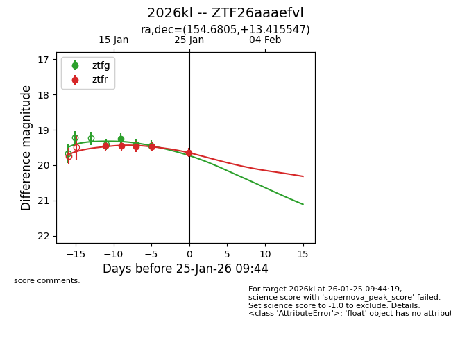
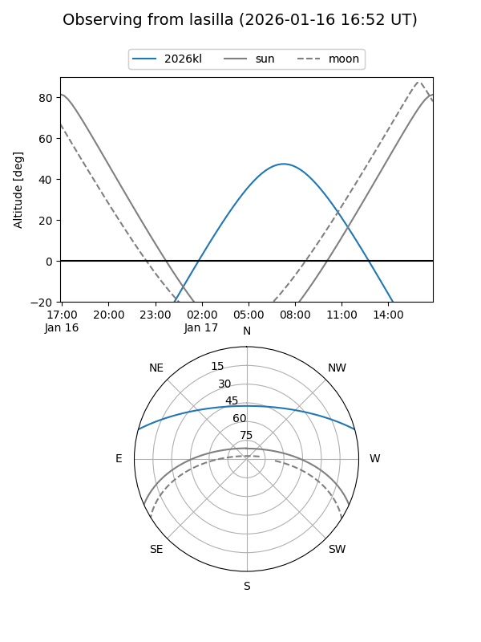
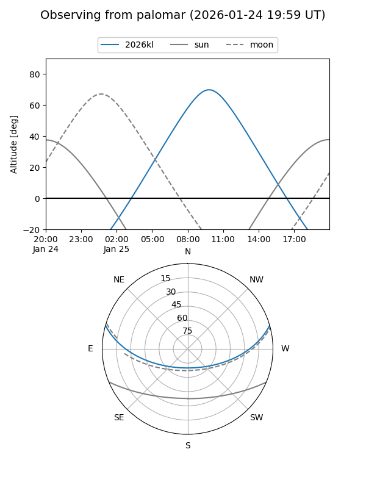
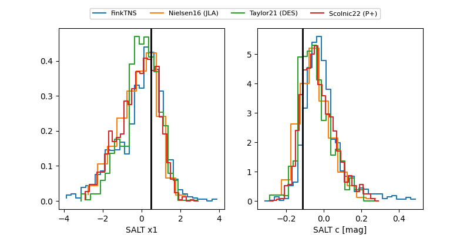

2026kl
Target 2026kl at 2026-01-25 09:46
Aliases and brokers:
FINK: link
Lasair: link
ALeRCE: link
TNS: link
YSE: link
alt names
ZTF26aaaefvl (ztf,fink_ztf)
2026kl (tns,yse)
Coordinates:
equatorial (ra, dec) = 154.6805,+13.41555
equatorial (HMS+DMS) = 10:18:43.31,+13:24:55.97
galactic (l, b) = (226.2357,+51.84184)
Flags:
Photometry:
last ztfg=19.44, ztfr=19.64
3 ztfg, 5 ztfr detections
Lightcurve

Visibility


Additional plots
